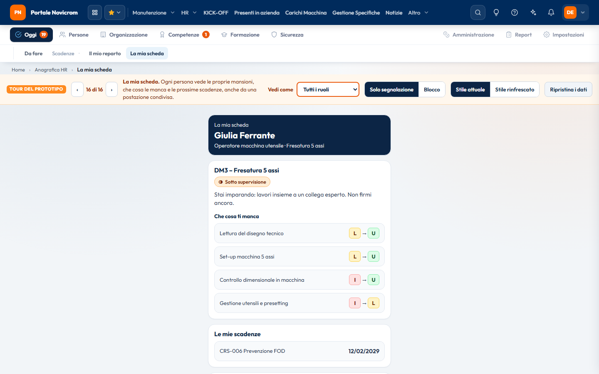

Il problema
Oggi non sappiamo dimostrare in pochi minuti chi è abilitato a fare che cosa.
Le informazioni ci sono, ma sono sparse e scritte a mano. Per un'azienda certificata EN 9100, che lavora per l'aerospazio e per il motorsport, è un punto debole.
242
mansioni registrate
Per nessuna il portale sa che cosa bisogna saper fare: è scritto solo sulla carta.
443
livelli di abilitazione
Tutti inseriti a mano. 203 sono al livello più alto: un dato da verificare.
56 su 135
persone
Non hanno alcuna mansione registrata nel portale.
Audit
L'ispettore chiede: «Chi può fare questa lavorazione, e come lo dimostrate?». Oggi la risposta si costruisce a mano, ogni volta.
Clienti
Aerospazio e motorsport vogliono persone qualificate sulle lavorazioni critiche, e vogliono vederne le prove.
Rischio
Una persona con un corso scaduto, o che non fa un lavoro da un anno, può restare abilitata sulla carta senza che nessuno riceva un avviso.
Numeri letti dal portale il 21 novembre 2026. Soli conteggi, nessun nominativo.
Oggi e domani
Le stesse persone, lo stesso portale. Cambia l'ordine.
Quattro gesti di tutti i giorni, come si fanno oggi e come si faranno.
Oggi
Domani
Dare una mansione
Il responsabile la assegna direttamente e sceglie il livello a mano. Nessuna richiesta, nessuna firma.
Una richiesta compilata a video. Il portale mostra che cosa manca. Approva e firma chi deve.
Dire che una persona sa fare
Una lettera scritta a mano nella matrice.
Un giudizio del responsabile dopo la formazione, con la data e la prova.
Accorgersi che qualcosa scade
Tre scadenzari diversi. Nessun avviso sulle competenze.
Un solo elenco. Avvisi 90, 60 e 30 giorni prima. Il responsabile riceve la segnalazione.
Rispondere a un audit
Tre matrici da confrontare fra loro.
Una pagina: chi, che cosa, a che livello, con quale prova.
Che cosa non cambia. Le pagine che le persone usano già restano. Non si butta via niente: si aggiunge l'ordine che manca, e si mette tutto sullo stesso filo, dall'ingresso della persona fino all'autonomia.
L'idea in una figura
Ogni mansione ha la sua ricetta. Il portale controlla chi ha tutti gli ingredienti.
La ricetta dice che cosa bisogna saper fare, e quanto bene. La dispensa è ciò che la persona sa fare davvero.
La ricetta
Mansione «Fresatura 5 assi grande formato»
Lettura del disegno tecnicoautonomo
Set-up macchina 5 assiautonomo
Programmazione a bordo macchinaintermedio
Controllo dimensionale in macchinaautonomo
Gestione utensili e presettingintermedio
Prevenzione FOD, con corso validoautonomo
→
La dispensa
Marco Rivalta, operatore
Lettura del disegno tecnicoc'è
Set-up macchina 5 assic'è
Programmazione a bordo macchinamanca
Controllo dimensionale in macchinac'è
Gestione utensili e presettingc'è
Prevenzione FOD, con corso validoc'è
5 ingredienti su 6. Marco può essere proposto per questa macchina. Gli serve una sola formazione, non sei: ciò che ha già dimostrato vale anche qui.
Le ricette esistono già sulla carta.Sono nella scheda personale (MOD.053): vanno portate nel portale e completate.
Gli ingredienti li certifica il responsabile.Dopo la formazione, lasciando una prova.
Il portale non assegna nulla da solo.Confronta, segnala e propone. Decide e firma una persona.
Esempio con nomi e dati inventati, lo stesso usato nel prototipo.
I livelli
I livelli funzionano come la patente.
Quattro gradini. A ogni gradino corrisponde che cosa la persona può fare da sola.
I
Foglio rosa
In formazione
Lavora solo con qualcuno accanto. Non firma.
L
Patente appena presa
Intermedio
Lavora da solo sui lavori che conosce. Sui lavori nuovi lo segue il capo reparto. Firma ciò che fa.
U
Patente consolidata
Autonomo
Lavora da solo su tutto, seguendo le istruzioni. Firma.
O
Istruttore
Esperto
Lavora da solo, firma e insegna ai colleghi.
Come si sale
Solo con un esame. Il responsabile di reparto valuta la persona dopo la formazione e lascia una prova scritta. Nessun livello sale da solo, e nessuno scende da solo.
E se qualcosa scade?
La patente resta, ma si accende una spia. Succede se un corso scade, se la persona non fa quel lavoro da un anno, o se salta la conferma semestrale. Il portale avvisa la persona e il responsabile, che entro dieci giorni lavorativi dice che cosa intende fare. Se nessuno risponde, l'avviso sale a RDD.
Segnalare, non bloccare. Nessuna persona viene fermata da un automatismo: decide sempre il responsabile, e ogni decisione resta scritta. Fanno eccezione i controlli con liquidi penetranti: lì la procedura impone già la sospensione, e il portale la applica.
I quattro livelli sono quelli della procedura Risorse Umane in vigore (MT CN 06). I tempi degli avvisi sono proposte, da confermare con la Qualità.
Che cosa vedranno le persone
Una domanda per pagina, e la risposta in dieci secondi.

La Qualità vede in una pagina quante persone sono in regola, reparto per reparto, e che cosa sta per scadere.

Il responsabile ha la matrice: una lettera per competenza, e un clic per sapere il perché.

Chi chiede una mansione compila la richiesta a video. Le persone firmano.

Ogni persona ha la sua scheda: che cosa posso fare, che cosa mi manca, che cosa scade.
Si può provare. Abbiamo costruito un prototipo navigabile, con sedici pagine e dati inventati: si apre dal link che verrà condiviso a parte. Niente di ciò che si fa nel prototipo tocca il portale vero.
I benefici
Che cosa ci guadagniamo, e come lo misuriamo.
Quattro misure semplici, con il valore di oggi e l'obiettivo.
| Che cosa misuriamo | Oggi | Obiettivo |
|---|
| Mansioni con la ricetta nel portale |
0 su 242 |
Tutte quelle del reparto pilota, poi le altre, partendo da quelle con più persone. |
| Livelli con una prova collegata |
0 su 443 |
Tutti, dalla data di partenza: ogni livello ha una data, un responsabile e una prova. |
| Pagine da consultare per un audit |
3 matrici, 3 scadenzari |
1 matrice, 1 scadenzarioAudit pronto in un clic. |
| Scadenze e segnalazioni |
Nessun avviso sulle competenze. |
Avvisi 90, 60 e 30 giorni prima. Ogni segnalazione ha una risposta entro dieci giorni lavorativi. |
Tempo risparmiato
La scheda di formazione della persona non si compila più a mano: la prepara il portale. Chi cambia mansione non rifà ciò che ha già dimostrato.
Quanto, lo diremo con i fatti
Oggi non abbiamo una misura del tempo speso. La prendiamo nel reparto pilota, prima e dopo, e la portiamo alla Direzione.
Che cosa serve
Si parte da un reparto. Ogni tappa si può fermare.
I tempi sono di sviluppo, per una persona. Il calendario vero lo detta la prima tappa: portare le ricette nel portale.
Subito
Portare le ricette nel portale
Si parte da quelle già scritte nella scheda personale. La Qualità aggiunge il livello richiesto.
7-11 settimane
Livelli con la prova, e le spie
Le sessioni di formazione e gli avvisi, prima nel reparto pilota.
Altre 3-4 settimane
La richiesta di mansione
Compilata e firmata a video, al posto dell'assegnazione diretta.
Fino a 4-7 mesi in tutto
Il resto
Le pagine di sintesi, la scheda stampabile, il menu riordinato.
QualitàRisponde a 18 domande già pronte. Completa le ricette. Aggiorna la procedura Risorse Umane.
Responsabili di repartoValutano le persone dopo la formazione. Confermano ogni sei mesi. Rispondono alle segnalazioni.
Risorse umaneOrganizzano la formazione partendo da ciò che manca. Seguono gli inserimenti.
RDD e MSOApprovano e firmano a video, con un sostituto quando sono assenti.
Costi
Nessuna nuova licenza prevista: si costruisce dentro il portale che abbiamo già, con sviluppo interno. Da confermare all'avvio.
Impegno delle persone
Le ore di Qualità e responsabili oggi non sono stimabili con serietà: le misuriamo nel reparto pilota.
I rischi
Che cosa può andare storto, e come lo gestiamo.
Le ricette non vengono completate.Senza il livello richiesto per ogni voce, il portale non ha nulla da controllare.
La base esiste già nella scheda personale: si carica quella. Si parte da un solo reparto, dalle mansioni con più persone e dalle lavorazioni qualificate.
Troppa carta per i responsabili.Se valutare costa fatica, non lo si fa.
Una sessione vale per più persone e più competenze. La conferma semestrale è un gesto. Rinnovare un corso non richiede una nuova valutazione.
Una segnalazione viene ignorata.È il prezzo di segnalare invece di bloccare.
Ogni segnalazione ha un responsabile e un termine. Se scade, sale a RDD. Un riepilogo periodico mostra quelle aperte.
All'inizio vedremo più rosso.Emergeranno mancanze che oggi non si vedono.
È la situazione reale: meglio vederla noi che un ispettore. Lo diciamo prima, e prevediamo un periodo di passaggio.
I livelli di oggi non sono affidabili.Quasi metà è al livello più alto.
Si traccia una linea di partenza: i livelli attuali entrano come «pregresso» e si rivedono alla prima conferma.
Le decisioni
Che cosa chiediamo alla Direzione.
Confermare la regola: il portale segnala, le persone decidono.In alternativa, il blocco automatico sulle sole lavorazioni più critiche.
Scegliere il reparto pilota.E dare a Qualità e responsabile il tempo per completare le ricette e aggiornare la procedura Risorse Umane.
Fissare la data di partenza e decidere che cosa fare dello storico.Ipotesi: gennaio 2027. I livelli di oggi entrano come «pregresso». Per i vecchi corsi: valgono solo quelli nuovi, oppure se ne recupera una parte scelta dalla Qualità.
Confermare chi firma, e chi sostituisce.RDD e MSO, con un sostituto per le assenze.
Autorizzare la prima tappa.Da 7 a 11 settimane di sviluppo, senza nuove licenze, su un solo reparto.
Che cosa succede dopo. La Qualità riceve il questionario con le 18 domande. Con le risposte e con il reparto pilota si parte. Il documento tecnico, con tutti i dettagli, accompagna questa sintesi.